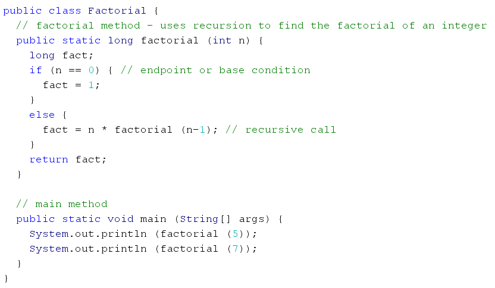
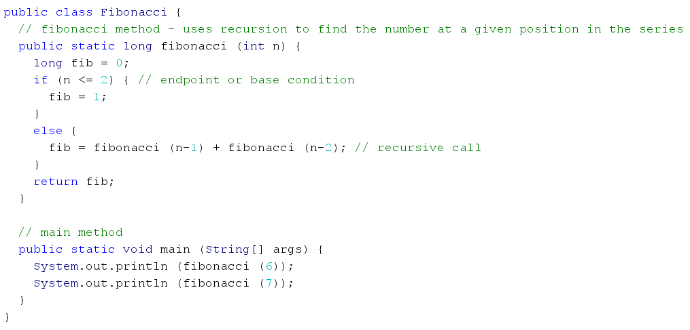

In this tutorial, we are going to cover the concept of recursion.
WHAT IS RECURSION?
Recursion is a process where something continuously calls itself, directly or indirectly, until an end condition is met. Thus, a recursive method is a method that calls itself.
When creating a recursive solution, it is important that the following three main criteria are met:
- A way to distinguish and act when the endpoint of the solution is reached
- The problem must be able to be reduced into smaller, repetitive elements
- A larger result must be achieved through the component elements
BENEFITS & DRAWBACKS
There are many benefits to using recursion over regular loops. To start off with, it is easier, clearer, shorter and simpler to understand compared to non-recursive functions. In addition, the program can present an accurate representation of the abstract solution strategy.
However, there are also some drawbacks to using recursion. It may take a longer amount of time as the program has to allocate and release memory, copy values to store the parameters into the local memory, and branch to/return from the function. Not to mention, a stack-overflow may occur if an infinite loop is created from an end condition that is never met, or if the recursion goes too deep and requires too many steps.
EXAMPLES
Here are a few examples using recursion. Feel free to play around and test the code yourself!
 